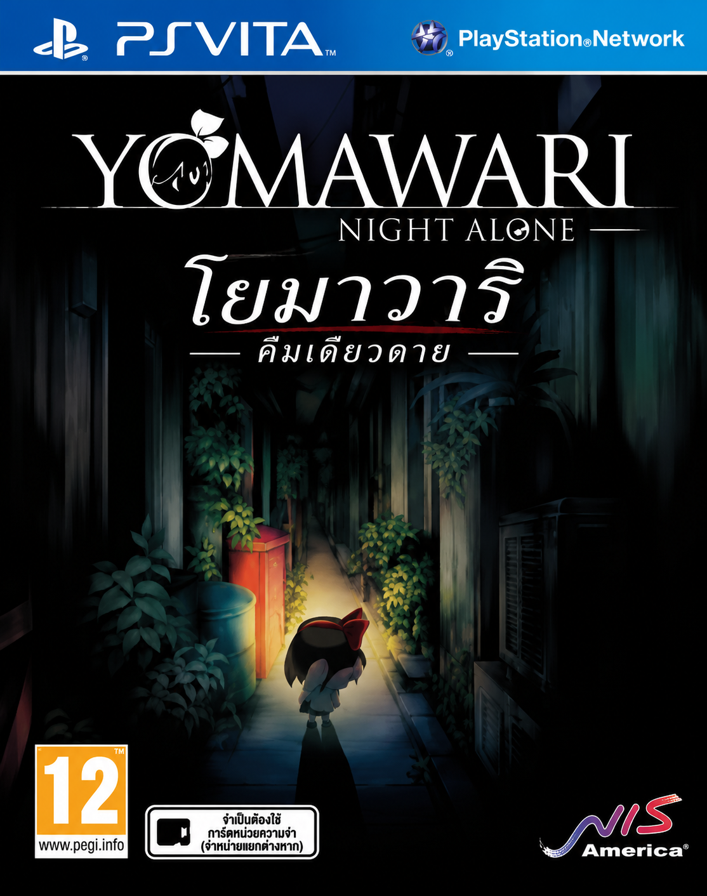

Yomawari: Night Alone ภาษาไทย v1.0
PS Vita · USA · PCSE00909
เมื่อโปโร สุนัขคู่ใจหายตัวไป พี่สาวออกตามหาแล้วไม่กลับมา เด็กหญิงจึงถือไฟฉายออกเดินเพียงลำพังในเมืองที่เคยคุ้น พอตกกลางคืน ถนนเส้นเดิมกลับเต็มไปด้วยเงาที่เฝ้ารออยู่ในความมืด เธอจะพาทั้งคู่กลับบ้านได้ไหม?
ดาวน์โหลดและติดตั้ง rePatch
ดาวน์โหลด ZIP rePatch v1.0 · 348 MB
สร้าง ZIP จากไฟล์เกมของคุณบนเว็บ
เลือกไฟล์ data.arc ต้นฉบับที่ถอดรหัสแล้วของเกม USA รหัส PCSE00909 ขนาด 530,607,616 ไบต์ เบราว์เซอร์จะตรวจและแปะแพตช์ในเครื่องของคุณ
ใช้เบราว์เซอร์ 64 บิตบนคอมพิวเตอร์ ไฟล์ ZIP ที่ได้มีขนาดประมาณ 531 MB
วิธีติดตั้งบน PS Vita
- เปิดใช้ปลั๊กอิน rePatch แล้วปิดเกม
- แตก ZIP แล้วคัดลอกโฟลเดอร์
rePatchไปไว้ที่ux0:/ - ตรวจว่ามี
ux0:rePatch/PCSE00909/data.arcแล้วเปิดเกม
ถ้าต้องการถอนแพตช์ ให้ปิดเกมและนำไฟล์ data.arc ออกจากตำแหน่งนี้
เกมใหม่ · v1.0
เปิดตัวภาษาไทย v1.0 สำหรับ PS Vita USA รหัส PCSE00909 · ดาวน์โหลด ZIP สำหรับ rePatch หรือนำ data.arc ต้นฉบับมาสร้าง ZIP บนเว็บได้ · ทดสอบช่วงเปิดเรื่องและข้อความสอนเล่นบน Vita3K จากชุดแปลเดิม ยังไม่ได้ทดสอบบน PS Vita จริง
ภาพเมนูที่ใช้ระบบนำเข้า Texture ของ Vita3K อยู่นอกชุด rePatch นี้